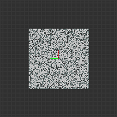

APA ContourFusion framework
Introduction
In the APA scenario, the target -level obstacle information represented by Bounding Box is not enough.The small parking space requires the perception and fusion module to give the obstacle contour -level access space.
Contourfusion is used to integrate obstacle perception results from sensors such as USS and Camera, and builds a passable area.The passable area that is finally sent to the downstream is represented by a 2D point set of surrounding obstacles relative to the proximal outline of the car.
Background
2022/06-2022/08, Develop 1.0 version APA FreeSpace Fusion - PJ-W3-PER - Docupedia (bosch.com)
2022/09-2022/04, pause, Guo Hongming transfer to the PSS module
2022/05-to the present, the current version
Input & Output
Input
|
enter |
Brief introduction |
Visualization |
|
Viper-BevSemseg |
|
|
|
Viper-FeFreespace |
|
|
|
Viper-Roadmarker |
|
|
|
Viper-FeDepthImage |
|
|
|
Uper-PointCloud |
|
|
|
Xloc-Egopose |
|
N/A |


Output
|
Output |
Brief introduction |
Visualization |
|
Contour |
|
|
Workflow
USS Point Cloud Pre-Process
Time & Space Alignment
The USS point cloud is generated by Valeo's UPER ECU, and it is generated or updated by 150 points for a single operating cycle.Every 6 points are encapsulated into a frame of CAN.Each CAN message contains the only point cloud time stamp.After the communication mode and the Data format of BSW and Sensor Abstraction, they are finally transmitted to the Contourfusion input port.After the Contourfusion gets the USS point cloud, the following problems need to be solved in turn:
Each frame cloud data contains multiple timestamps and needs to be performed (currently using medium -bit).
The coordinates of each point in the point cloud data are based on the self -car coordinate system, so:
Before performing the Semseg Filter, you need to use the unique point cloud timestamp to index the closest SEMSEG DATA in the Semseg Buffer to achieve the alignment of the SEMSEG DATA and the USS point cloud data in the Bev image coordinate system.
Before the Point Cloud Integration, the USS point cloud data and Local Map are aligned under the global coordinate system in the same way.
Dbscan Cluster
In a frame of USS point cloud data, each point exists independently, and there is no connection between each other and cannot provide the oblite -level attributes required for downstream.And when using visual information to filter USS point clouds, a single point often cannot generate highly confident associations.Therefore, here is a cluster of the USS point cloud data.
For the general distribution features of the USS point cloud data, the DBSCAN (DENSITY-BASED Spatial Clustering of Applications with Noise) algorithm is used.The rough principle is: For the given Data set, first select a point as the starting point, find out all points within a certain value of the surrounding distance, forming a density -connected area, thereby determining a cluster.Then scan each point of the data concentration in turn, repeat the above process until all points are accessed.At the same time, it will also be found for those unqualified outbound points or noise points.And it can be found that the cluster of any shape is not affected by the initial cluster center.
Classification effect:


Semseg Filter
Protect the USS point cloud data one by one to the SEMSEG image after alignment, find the obstacle elements in the neighborhood, and use the group as a unit to statistically query the results.If the query fails, it will be regarded as noise filtering.
Point Cloud Uniform
In order to facilitate the unified processing of obstacles of different sensor sources, the DATA to be integrated will be uniformly expressed before the construction of the local map.This process contains two core tasks:
According to the height category of the USS point cloud, the prior height is generated, 3D points are obtained from the 2D point, and the 3D point is expanded down to the ground in a discrete manner in the vertical direction of the ground.
Convert the USS point cloud data structure to the input format of the Voxel Fusion algorithm
Fisheye Free Space Pre-Process
Time & Space Alignment
Similar to the USS point cloud data, Fisheye Free Space data also needs to align with Semseg and Local Map under the appropriate coordinate system.
Height Class Reference
Unlike the USS point cloud data, the Fisheye Free Space does not provide high categories nor a semantic category.Therefore, under the existing resources, the Fefs point can only be projected on the semseg to the semantics of the judgment point, which generates a priority height.
Pseudo Free Space Point Exclude
As shown in the red part in the figure below, there are more "pseudo -outlines" caused by the height of obstacles in the FEFS DATA.These pseudo -outlines do not exist on the ground that cannot be passed through obstacles. It is a systematic False Positive, which will cause serious interference to the Voxel Fusion algorithm.Therefore, it must be removed during the pre -processing process.
The specific practice mainly uses the laws of pseudo -contour mainly in the direction of parallel to sight.So first project Fefs data to semseg, and then use it Douglas - The Pook algorithm discretes the contour into a folding line, and then judges the connection of the point in the middle point in each line segment in the light heart and the angle of the line segment itself. If it is less than a certain degree, the line segment is removed.
At present, the key points that need to be further verified are:
Is the law of parallel and parallelism of pseudo -contour and sight still established under IPM?
The images of 4 fish eyes are projected on SEMSEG at the same time and carried out Douglas -Pook is discretely obtained Does the folding line still obey the above laws?
Point Cloud Uniform
Refer to the approach in the USS point cloud processing, and use the prior height obtained by the Height Class Reference to expand the point cloud expansion and format conversion of the FEFS DATA to facilitate subsequent map construction.
Voxel Fusion
Local Map Transition
The single -frame vision range of the VIPER environment is a square with a side length of 15m*15m in the center of the self -car geometric center as the middle point.In order to make the APA PNC more planned space when planning the parking path, and to avoid huge memory occupation caused by maintaining a map based on a global coordinate system, it is necessary toThe self -car movement continues to update the center point of the map:
When the program starts, fix the central point of the local map at the projection point of the ground on the ground from the center of the rear axis of the car; record the information of 16M each, left and right before and after the center point.
According to the image timestamp of the VIPER current frame, find the most similar self -parking position in the buffer of the parking position.
When the location of the car is currently exceeded 5M of the original map center point, the map center point is updated to the projection point of the ground center of the rear axis of the car at this time.After moving, the information is still kept in the map, otherwise discard;

Uniformed Point Cloud integration
In the APA scenario, the outline -level obstacle -level obstacle perception needs determine that the upstream can only be used to characterize the accessible area by point sets.With the point as a fusion goal, the complexity is much higher than the fusion of Bouding Box, etc.The difficulty is:
The relationship between the correlation between the front and rear frame Data and the heterogeneous DATA is unstable.Conventional fusion algorithms such as Karman filtering, which generally generate association indicators by the distance between the Ou's or Mali distance between the targets to be fused, thereby determining the relationship.For point -like targets, the location error is very easy to occur, so it is difficult to obtain a stable relationship.
The calculation process of the variance is complicated.The first is how to show the difference in the set of points.Secondly, because the number of points of the contour of the obstacle is generally higher than that of the number of BBOXs that indicate the target of the obstacle, no matter how the choice of the variance can avoid complicated calculations.

Therefore, in the early stage, I tried to achieve the fusion of obstacles in the method of Occupied Grid Map.Because Grid Cell is naturally aligned, the complicated and sensitive related relationship calculations are avoided.In addition, Grid Cell can be occupied as an observation event, and the frequency of statistical time occurs as judgment of Cell state, thereby avoiding complicated square difference calculation. vogm_multi_frame_0_2.webm (sharepoint.com) EssenceBut there is a problem that in OGM, each CLL is independent of each other, and the outline of "no thickness" obstacles cannot be produced, and 3D situations cannot be processed.
To this end, the Voxel Fusion solution is proposed here.Its core idea is to build and update the "cut -off with symbol distance field" within the effective range of local maps.
As shown below, Trimming the Truncated Signed Distance Field (TSDF) is a Data structure commonly used in computer graphics to represent the distance information on the surface of the object.

In terms of data structure, TSDF is generally composed of a three -dimensional grid, and the distance information of the point to the surface of the object is stored at each grid point and the observation weight.The value of the distance information D (x) is symbol. When the grid point is inside the object, the distance value is negative; when the grid point is outside the object, the distance value is positive; when the grid point is just on the surface of the object surface, the grid point is located on the surface of the object surface.At the time, the distance value is 0.The weight w (x) can be adjusted, which is generally set to the constant, or the confidence of the point cloud.

The point cloud observation of each frame can be regarded as a deeper measurement from the ENVIRONMENT of the Sensor coordinate system.Therefore, the point cloud observation generated in real time can be used to integrate the current observation along the direction of the sight to the following formula to the interception.
The D and W values are current observation information.The relationship between current observations and historical observations is determined by Raycast.
Mesh Extraction
Within each processing cycle, after integrating the latest point cloud observation into TSDF, the Marching Cube algorithm can be used to extract the D value of 0 from the TSDF.


As shown in the left of the figure above, the process of extracting the equivalent surface from the entire TSDF in the current local map range can be decomposed as the appropriate equivalent surface from each Voxel, and then connecting it together.Therefore, here is two categories based on the relationship between Voxel's TSD value and 0 C and 0:
The angle point greater than 0 is deemed to be above the value surface, recorded as C = 1;
The angle point of less than 0 is deemed to be below the equal surface, recorded as C = 0;
According to the simple arrangement and combination, it can be seen that there are 256 combinations of the 8 top -point C value, which means that the equivalent surface shape in a Voxel is limited, with a total of 256 species.And in the case of only the shape of the equivalent surface, and the position of the equivalent surface, it can be further reduced to 15 kinds, as shown in the right of the figure above.The shape of these 15 equivalent surfaces can be decomposed into 0-5 triangles.
Therefore, every Voxel (Cube) in the current TSDF (CUBE) is determined according to the TSD value of its 8 angle points, and the value surface shape in the Voxel can be determined (represented by several triangular corner coordinates).Connect all triangular angle coordinates to get the final equivalent surface.
Contour Generation
The existing downstream users (PSS and APA Planner) do not accept 3D obstacles, so they need to projection equivalent to ground.Based on the principles of point cloud processing of USS point clouds and fish eye FreeSpace based on 4.1.4 and 4.2.4, there will be no suspended equivalent surface in the future.Therefore, the Z value of the equivalent triangle can be directly projected directly to achieve projection.
Depth based contour fusion
UPER + Viper_Semseg + NRCS freespace polyline + Depth image (stixel)
The Stixel is a Compact Medium Level Representation of the 3D-World
Input
UPER: uss + height type (low, high, traversable, NA)
VIPER: free-space polyline + stixel-based height
process:
Extract Stixel according to the depth diagram of each fish eye
According to the average depth of Stixel and its depth, obtain the location information of the obstacles in the self -car coordinate system
Multi -frame observation fusion obstacles
advantage:
Program based on deep diagram
Light current/sfm and other methods requires the depth of the vehicle to move and reconstruct the depth of obvious texture areas, while the deep chart can extract the depth information when the vehicle is static
Deep diagram prediction methods based on neural network training are more stable and better than traditional CV methods; especially in sparse areas.
The depth diagram provides the depth of 100%pixels in the full image, and the light flow/SFM can only be in the area where the texture is strong
Stixel strategy
Stixel is a medium -level representation of the scene.
Reduced the calculation of the depth graphic pixel processing
Can support suspended obstacles
|
item |
depth image |
optical-flow / sfm |
|
Sporting |
Arbitrarily |
Need to be obtained in exercise, Structure From Motion |
|
stability |
Good generalization performance, especially in the sparse area of texture |
Only in the area with strong texture (Key-POINT BASED) |
|
Amount of information |
Full figure pixel depth, 100% |
A strong texture area, <5% |
|
|
|
|

-
(a) the free-space (b) foreground membership -
(c) membership cost image (d) height segmentation
Stixel extraction based on deep diagram

Semantic image (not required input yet):
Temporary no -eye semantic semantic segmentation input
Semantic segmentation diagram is conducive to improving object segmentation accuracy and providing more semantic type information
Depending on the current MTCNN multi -tasking model, the computing power and actual needs of MTCNN, to be determined
Can be used to replace IPM Semantic Segmentation Image
Status
APA Contour Progress - PJ-W3-PER - Docupedia (bosch.com)
530 nodes -CONTOUR data mainly provides a USS point cloud based on 4.1, which gives downstream users to realize data links.The current state is as follows:
need:
The first edition requirements and interfaces are basically sorted out
Development:
The alignment and projection of USS point clouds and SEMSEG images:
Understand and use w3_trans_helper libraries and related APIs Introduction & tag log - wave 3 development - Docupedia (bosch.com)
Prepare 11127C to look at the camera calibration file (in the short term, the AOS Parameter mechanism needs to be introduced in the long run, and SWA has been submitted)
The packet and screening of USS point clouds:
Dianyun uses DBSCAN clustering
For each class, whether there is OBSTACLE within the range of the surrounding 5X5
According to whether the statistical value of the group level is more than half, decide whether to retain the point of the group
Contour's package: The downstream demand is divided into two levels, one is the demand of the Node level, and the second is the needs of Object.
Node level:
At present, only 100 points per frame (fixed -length) of downstream, only the first 100 points of the USS first take the first 100 points of the USS
The variance matrix is not available for the time being
Object level:
Object ID, currently cannot provide ID
Confident, take the Node average in the group
Height class, vote value in the group
Object class, height class is high as OBSTACLE, low is set to Curbstone
integrated
Upgrade AOS 3.3 Solving compilation problems (on-going)
test
data:
Rosbag Contains: XODOM & Valeo UPER Point Cloud 5/18, it is serious [CNWVIII-42256] Validation:: Chery 430 SW USS data record - tracker08 (bosch.com)
Rosbag Contains: XODOM & Valeo Uper Point Cloud & ipm Semseg 5/25, DELAY
environment:
Can't compile the X86 version of ROOT → Can't set up DOL offline running ENVIRONMENT
tool ：
USS point cloud Visualization Tool Ready, lack of data verification
620 nodes -the full Voxel Fusion link, the current state is as follows:
Develop
VIPER preprocessor code -not start
voxel core code Develop -60%
CONTOUR post -processing code -NOT START
integrated —— not start
test
data
rosbag contains: xodom & valeo uper point cloud & ipm semseg & fisheye freespace 5/31 ——not ready
environment
DOL Environment -NOT Ready
tool
VIPER input interface Visualization Tool -NOT Ready
Contour output interface Visualization Tool -NOT Ready
Problem
For the above content, the human resources are extremely tight at 620 nodes
Appendix: